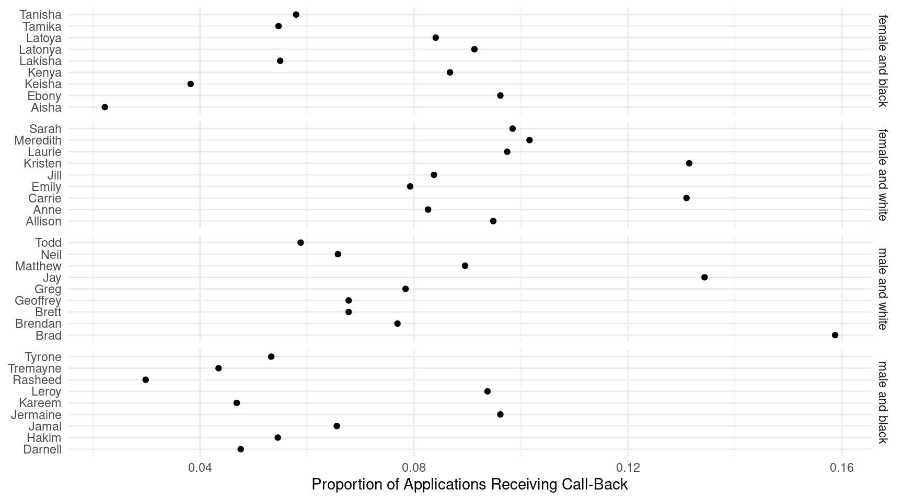

Categorical Response Variables, Marginal and Mixed Effect Models, and Review
Statistics 516, Homework 5
You can also download a PDF copy of this homework assignment.
This homework covers regression models with categorical response
variables, and marginal and mixed effects models. The homework is also
serves as a kind of review of how to make inferences based on regression
models (e.g., rate and odds ratios). Packages that you will need to have
installed include mice, SMPracticals,
qss, VGAM, lme4,
geepack, dplyr,
tidyr, trtools, and possibly
emmeans. You may have some of these packages installed
already. Note that the qss package requires a special
command for installation which is explained in the problem that uses it.
Note that you will be using the geeglm function from the
geepack package to estimate marginal models, and the
lmer and glmer functions from the
lmer4 package to estimate linear and generalized linear
mixed models, respectively. In some problems I ask you to compare either
standard errors or confidence intervals. The contrast
function will not (by default) give you standard errors if you specify a
transformation using the tf argument, but it will give you
confidence intervals.1 Functions from the emmeans
package will provide both standard errors and confidence intervals.
This assignment is due by 8:00 AM on Monday, May 16th. Email your homework to trjohns@uidaho.edu. If possible, save/export your homework as a PDF file. Late assignments will be penalized by 10% if turned-in within 12 hours of the deadline, and 10% more for each additional 12 hour interval.
Your solutions must be typed and very neatly organized. I will not try to infer your solutions if they are not clearly presented. Mathematical expressions need not be typeset perfectly but they should be clear. You may substitute letters for symbols (e.g., b1 for \(\beta_1\)) and use other shortcuts for mathematical notation if no meaning is lost.
You must include with your solutions the relevant R output and R code that created them. Be sure that you provide sufficient code that I can replicate your results. Include both the code and the output within the text of your solutions (not in an appendix) using cut-and-paste. But edit your output so as to provide only that which is relevant to answering the questions. Use a monospace font (e.g., Courier or Monaco) for R code and output for clarity. Do not use a monospace font for text that is not R code or output.
Plots from R Studio can be exported in various formats or directly to the clipboard using the “export” menu in the top-left part of the plot panel.
It is permitted for you to discuss the homework with other students in the course. However your work including R code, output, and written answers must be your own.
You are very welcome to ask me questions. I will be happy to clarify what I am asking in any of the questions and will provide you some help with solving problems by showing you how to work through similar problems from class. I will also be open to helping with any R problems. If you email me with a R question, it will usually be helpful for you to include enough of your R script so that I can replicate your issue. But please avoid saving all your questions for just before the assignment is due. I can usually respond quickly to questions, but I will sometimes need time to respond.
Dental Fissure Growth Data
The data frame potthoffroy in the mice
package is from a study of the growth of the distance from the center of
the pituitary gland to the pteryomaxillary fissure in boys and girls.2 The
pituitary-pteryomaxillary distance was measured four times at ages 8,
10, 12, and 14 in several boys and girls. These longitudinal data are
stored in wide form.
library(mice)
head(potthoffroy) id sex d8 d10 d12 d14
1 1 F 21.0 20.0 21.5 23.0
2 2 F 21.0 21.5 24.0 25.5
3 3 F 20.5 24.0 24.5 26.0
4 4 F 23.5 24.5 25.0 26.5
5 5 F 21.5 23.0 22.5 23.5
6 6 F 20.0 21.0 21.0 22.5For plotting and modeling we need to put them into long form. This is done below. Also a quantitative age variable is created from the column labels of the wide form data.
library(dplyr)
library(tidyr)
dental <- potthoffroy %>% rename(subject = id) %>%
pivot_longer(cols = c(d8,d10,d12,d14), names_to = "obs", values_to = "distance") %>%
mutate(age = as.numeric(substr(obs, 2, nchar(obs)))) %>% dplyr::select(-obs)
head(dental)# A tibble: 6 × 4
subject sex distance age
<int> <fct> <dbl> <dbl>
1 1 F 21 8
2 1 F 20 10
3 1 F 21.5 12
4 1 F 23 14
5 2 F 21 8
6 2 F 21.5 10The plot below shows the observations with line segments connecting the observations from the same subject.
library(ggplot2)
p <- ggplot(dental, aes(x = age, y = distance)) + theme_minimal() +
geom_line(aes(group = subject), alpha = 0.25) + geom_point() +
facet_wrap(~ sex) + labs(x = "Age (years)", y = "Distance (mm)")
plot(p) These data were featured in the lecture on fixed effects models.3 The fixed effects
approach is not useful here for making inferences regarding sex, so you
will consider some other approaches that are more useful. When using the
These data were featured in the lecture on fixed effects models.3 The fixed effects
approach is not useful here for making inferences regarding sex, so you
will consider some other approaches that are more useful. When using the
geeglm and lmer functions you might find it
useful that these data are very similar in structure to the
Sitka data featured in lecture where we have
age instead of Time, sex instead
of ozone, and subject instead of
tree. Note that unlike the Sitka data we do
not need to transform the response variable or the time/age variable.
For each of the problems below report the summary output so
that I can verify that you specified and estimated the model
correctly.
Estimate a linear model using the
lmfunction with distance as the response variable and age andsexas the explanatory variables, with an interaction. Note that this is arguably not an appropriate model here as it does not account for the lack of independence of observations from the same subject, but you will use it for comparison. Using either thecontrastfunction or functions from the emmeans package, estimate (a) the difference in the expected distance between boys and girls at ages of 8, 10, 12, and 14, (b) the rate of change in the expected distance per year for boys and for girls, and (c) the difference in the rate of change in the expected distance per year between boys and girls.Estimate a marginal linear model using the
geeglmfunction from the geepack package withdistanceas the response variable and age and sex as the explanatory variables, with an interaction. Note that subject is youridvariable and your correlation structure should be specified as exchangeable as was done in lecture. Using this model make the same inferences that you did in the previous problem using thecontrastfunction or the emmeans package. Note that the syntax for these inferences should be the same as what you used in the previous problem.Estimate a linear mixed effects model using the
lmerfunction from the lme4 package with distance as the response variable and age andsexas the explanatory variables, with an interaction. Specify a random “main effect” for subject. Using this model make the same inferences that you did in the previous problems using thecontrastfunction or the emmeans package. Note that the syntax for these inferences should be the same as what you used in the previous problem.Compare the inferences you obtained in the three problems above, paying particular attention to the estimates and their standard errors. Discuss briefly the similarities and differences in the inferences for the three approaches.
Swedish Speed Limit Study — Revisited, Again
Once again consider the data from the third and fourth homework assignments (review the study description given in the third homework assignment).
library(SMPracticals)
library(dplyr)
library(tidyr)
limitstudy <- limits %>%
rename(limit_1961 = lim1, limit_1962 = lim2, y_1961 = y1, y_1962 = y2) %>%
pivot_longer(cols = -day, names_to = c(".value", "year"), names_sep = "_") %>%
mutate(limit = factor(limit, levels = c(0,1), labels = c("no","yes")))
head(limitstudy)# A tibble: 6 × 4
day year limit y
<fct> <chr> <fct> <int>
1 1 1961 no 9
2 1 1962 no 9
3 2 1961 no 11
4 2 1962 no 20
5 3 1961 no 9
6 3 1962 no 15Here is a plot of the number of accidents for each year and day.
library(ggplot2)
p <- ggplot(limitstudy, aes(x = day, y = y, color = limit)) +
theme_minimal() + geom_point() + facet_grid(year ~ .) +
scale_x_discrete(breaks = seq(1, 92, by = 7)) +
labs(x = "Day", y = "Number of Accidents", color = "Speed\nLimit")
plot(p) As I discussed in the third homework assignment, there may be an effect
of the factor
As I discussed in the third homework assignment, there may be an effect
of the factor day. This is because the days are matched in
the sense that a given day in 1961 is the same day of the week and month
as the day with the same level in 1962 (e.g., if a given day is a Sunday
in 1961 it is also a Sunday in 1962). The accident rate may vary by day
due to differences in, for example, traffic (e.g., work days versus
weekends and holidays). Plotting the residuals from a Poisson regression
model shows some evidence of an association between days that is not
captured by the model.
m <- glm(y ~ limit + year, family = poisson, data = limitstudy)
limitstudy$residuals <- rstudent(m)
d <- limitstudy %>% dplyr::select(day, year, residuals) %>%
pivot_wider(names_from = year, values_from = residuals)
p <- ggplot(d, aes(x = `1961`, y = `1962`)) + theme_minimal() +
geom_count() + scale_size_continuous(breaks = 1:2, range = c(1,2.5))
plot(p) Here you will extend your Poisson regression model to account for the
lack of independence of observations made on the same day in 1961 and in
1962. For each model report the output of
Here you will extend your Poisson regression model to account for the
lack of independence of observations made on the same day in 1961 and in
1962. For each model report the output of summary so that I
can verify that you specified and estimated the model correctly.
Estimate a marginal Poisson regression model using the
geeglmfunction with the number of accidents as your response variables, and limit and year as explanatory variable (with no interaction). Note that day will be youridvariable and you should specify an exchangeable correlation structure.Estimate a mixed effects Poisson regression model using the
glmerfunction with the number of accidents as your response variables, and limit and year as explanatory variable (with no interaction). Specify your model with a random main effect for day.For each of the two models you estimated above, use either the
contrastfunction or functions from the emmeans package to estimate (a) the expected number of accidents with and without a posted speed limit each year and (b) the rate ratio describing the relationship between whether or not a speed limit was posted and the expected number of accidents (like you did in the previous two homework assignments). Compare your estimates and standard errors to what you got when you used a Poisson regression model in the third homework assignment (usingfamily = poisson, notfamily = quasipoisson) in terms of the estimates and either standard errors or confidence intervals for the rate ratios. Briefly discuss similarities and differences between the three models.
Audit Study of Discrimination in Hiring
The data frame resume in the qss
package are from an audit study of
hiring discrimination based on perceived gender and race.4 Resumes were sent in
response to job advertisements, and the researchers recorded whether or
not the job application resulted in a call-back. The applicants were
fictitious with randomly-assigned names that were selected so that they
would be likely identified as white or African-American, and as female
or male.5
Use the command
devtools::install_github("kosukeimai/qss-package", build_vignettes = TRUE)to install the qss package. Note that you will need to have the devtools package installed to do this, but you should have it installed already since it is necessary to install trtools.
library(qss)
data(resume)
head(resume) firstname sex race call
1 Allison female white 0
2 Kristen female white 0
3 Lakisha female black 0
4 Latonya female black 0
5 Carrie female white 0
6 Jay male white 0For plotting and modeling it is useful to aggregate the data to show the number of call backs and the total number of resumes for each combination of name, sex, and race.
library(dplyr)
resumeagg <- resume %>% group_by(firstname, sex, race) %>%
summarize(callbacks = sum(call), applications = n()) %>%
mutate(sexrace = interaction(sex, race, sep = " and "))
head(resumeagg)# A tibble: 6 × 6
# Groups: firstname, sex [6]
firstname sex race callbacks applications sexrace
<chr> <chr> <chr> <int> <int> <fct>
1 Aisha female black 4 180 female and black
2 Allison female white 22 232 female and white
3 Anne female white 20 242 female and white
4 Brad male white 10 63 male and white
5 Brendan male white 5 65 male and white
6 Brett male white 4 59 male and white Note the use of the interaction function here to create
a new variable sexrace for every combination of the
variables sex and race. This is used in the
plot below. The plot shows the proportion of job applications that
received a call-back for each name.6
library(ggplot2)
p <- ggplot(resumeagg, aes(x = firstname, y = callbacks/applications)) +
theme_minimal() + coord_flip() + geom_point() +
facet_grid(sexrace ~ ., scales = "free_y") +
labs(y = "Proportion of Applications Receiving Call-Back", x = NULL)
plot(p)
The focus here would be on the relationship between the probability (or
odds) of a call-back as a function of the likely perceived race and
gender of the applicant. But there may be an effect of the name
as well. The name may have an effect because (a) some names may be more
or less likely to be perceived as from an applicant of a certain race or
gender, and (b) names may differ in terms of other perceptions such as
social class. Here you will consider some methods for accounting for the
effect of name while making inferences about the effect of (likely
perceived) gender and race. Be sure to report the output of
summary for each model so that I can verify that you
specified and estimated the model correctly.
Estimate a logistic regression model using the
glmfunction that you can use to obtain odds ratios for the effect of gender and race on the odds that an application will get a call-back. Include an interaction between gender and race. Note that this model may not be appropriate since it does not account for an effect of name, but it will be used for comparison.Estimate a marginal logistic regression model using the
geeglmfunction that you can use to obtain odds ratios for the effect of gender and race on the odds that an application will get a call-back. Include an interaction between gender and race. Use first name as youridvariable and specify an exchangeable correlation structure. The data will first need to be sorted byfirstnamefor using with thegeeglmfunction. You can do this usingresumeagg <- resumeagg %>% arrange(firstname)before estimating the model.
Estimate a mixed effects logistic regression model using the
glmerfunction that you can use to obtain odds ratios for the effect of gender and race on the odds that an application will get a call-back. Include an interaction between gender and race. Specify a random main effect for first name in your model. Report the output ofsummaryfor this model.Use either the
contrastfunction or functions from the emmeans package to estimate the odds ratios for the effects of gender and race for each of the three models you estimated. Note that since there is an interaction you should have two odds ratios for each explanatory variable (i.e., the odds ratios for the effect gender will be computed for each race, and the odds ratio for race will be computed for each gender). Focusing on the estimates and either the standard errors or confidence intervals for the odds ratios, briefly describe how these odds ratios compare across the three models.
A Sequential Model for Vaccine Efficacy
An article published on covid-datascience.com discussed some misunderstandings about data on the efficacy of the COVID-19 vaccine in Israel.[^efficacy] One issue was that the apparent efficacy of the vaccine is underestimated if one fails to account for age. The reason is that older people were much more likely to be vaccinated, but older people are also more likely to develop a severe infection requiring hospitalization. Here the variable age is an example of what is sometimes called a suppressor variable because it reduces the apparent effect of another explanatory variable if it is not also included as an explanatory variable. For this problem I have created a fictional data set that demonstrates this phenomenon.
vaccine <- data.frame(
age = c("<50","<50","50+","50+"),
vaccine = c("n","y","n","y"),
uninfected = c(7932, 9635, 800, 8516),
infected = c(1817, 514, 193, 456),
hospitalized = c(96, 6, 19, 15)
)
vaccine age vaccine uninfected infected hospitalized
1 <50 n 7932 1817 96
2 <50 y 9635 514 6
3 50+ n 800 193 19
4 50+ y 8516 456 15These data are in aggregated form, showing the number of subjects for
each combination of age (less than 50 or 50 or more years in age) and
vaccination (yes or no) classified as uninfected, infected with
COVID-19, and hospitalized due to COVID-19. Note that people who are
hospitalized are also infected, so the infected category is only for
people who are infected but not hospitalized. For each model you
estimate below, report the output of summary so that I can
verify that you specified and estimated the model correctly.
Estimate two logistic regression models using the
glmfunction: one model for the probability that someone will get COVID-19 (i.e., classified asinfectedorhospitalizedversusuninfected) and another for the probability that someone who gets infected will be hospitalized (i.e.,hospitalizedversusinfecteced). Use only whether or not someone was vaccinated as your explanatory variable. Note that since the data are in aggregate form you can specify the “response variable” inglmascbind(infected + hospitalized, uninfected)for the first model, andcbind(hospitalized, infected)for the second model. Estimate the odds ratio for the effect of vaccine for each model, and write a sentence that summarizes how to interpret each odds ratio.Estimate a sequential regression model using the
vglmfunction from the VGAM package with the status as your three-category response variable (i.e., uninfected, infected, or hospitalized, in that order) and vaccine as your only explanatory variable. You should find that the parameter estimates correspond to what you obtained with the two logistic regression models in the previous problem.Estimate the sequential regression model but now including age as a second explanatory variable (do not include an interaction between vaccine and age). Report and interpret in a sentence the odds ratios for the effect of vaccination on (a) infection, and (b) hospitalization of an infected person. [^efficacy]: Vaccine efficacy is an example of what we could a marginal effect in a binomial regression model. It is the (estimated) percent reduction in the probability of an infection from vaccination.
The
contrastfunction does have the ability to compute these standard errors using the delta method, which is what is used when you obtain them with functions from the emmeans package. It will report these (approximate) standard errors if you specify the argumentdelta = TRUE. However if you do this then the confidence and tests will use this standard error rather than the standard error for the un-transformed quantity. Computing the confidence interval and tests for the un-transformed quantity is generally considered to be better. The confidence interval endpoints can then be transformed which is done by default bycontrastand functions in the emmeans package. Thecontrastfunction does not do this ifdelta = TRUEfor situations where one wants to use the estimated standard error for confidence intervals and tests, but you can always omit the argument to get the confidence interval and tests the usual way.↩︎Potthoff, R. F., & Roy, S. N. (1964). A generalized multivariate analysis of variance model useful especially for growth curve problems. Biometrika, 51(3), 313–326.↩︎
These data have appeared in many articles and books, and are included in several R packages. In lecture I used the data frame form the heavy package, but this package requires compilation of some C code which may not be able to do if you do not have a compiler installed.↩︎
Bertrand, M. & Mullainathan, S. (2004). Are Emily and Greg more employable than Lakisha and Jamal? A field experiment on labor market discrimination. American Economic Review, 94, 991–1013.↩︎
This study is actually a bit more complicated because the researchers also manipulated other characteristics of the resumes such as education, experience, awards, and other information that was included or omitted from the resume. Also the data include information about the jobs for which the “candidates” applied such as skill and experience requirements, and the type of industry. For the purpose of this exercise we will ignore these other variables.↩︎
The
scales = "free_y"argument lets the scale of the variable (herefirstname) to be “free” for each facet. If it was omitted then every name would be listed for every value ofsexrace, but that is not necessary here since only certain names go with each value ofsexrace(i.e., the name factor is nested within the combinations of the sex and race factors). Try removing the argument and see what happens to the plot to better understand what it does.↩︎